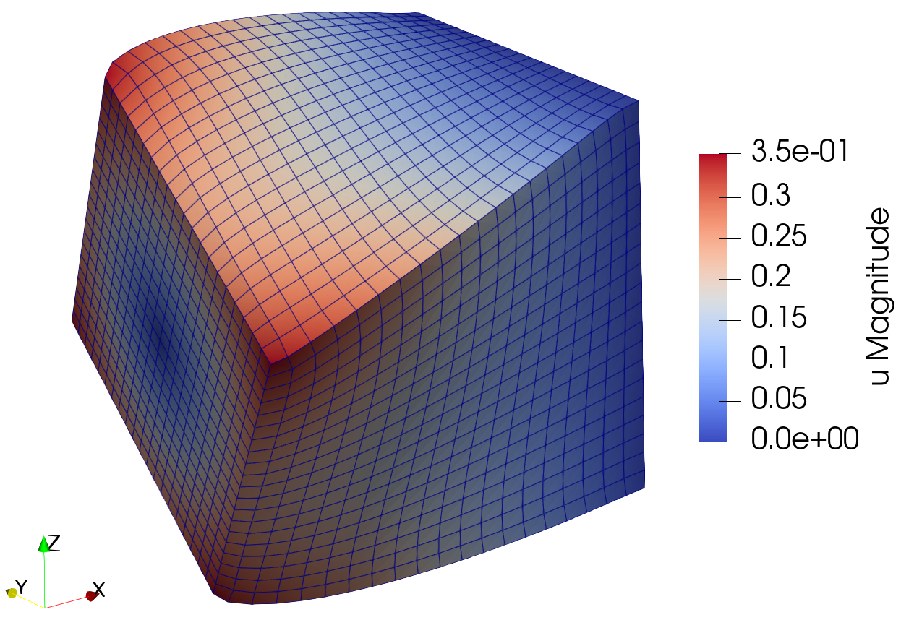

Hyperelasticity#
Problem definition#
Hyperelastic materials, such as elastomers and biological soft tissues, demonstrate characteristic nonlinear stress-strain behavior governed by strain energy density functions under finite deformations. This example demostrate how to solve the boundary value problem (BVP) of Neo-Hookean hyperelasticity using JAX-FEM, with particular focus on the finite deformation regime induced by prescribed displacement constraints.
The governing equations for the BVP of hyperelastic materials can be expressed as:
where the computational domain is a unit cube: \(\Omega = (0,1) \times (0,1) \times (0,1)\). A fixed displacement boundary condition \(u_{D_1} = 0\) is applied on the right surface \(\Gamma_{D_1}\) (\(x = 1\)), while a prescribed displacement field is imposed on the left surface \(\Gamma_{D_2}\) (\(x = 0\)), which is defined as follows:
The traction in the Neumann boundary condition is specified as \(\boldsymbol{t} = \begin{bmatrix}0 & 0 & 0\end{bmatrix}^{\textrm{T}}\), and the body force is defined as \(\boldsymbol{b} = \begin{bmatrix}0 & 0 & 0\end{bmatrix}^{\textrm{T}}\).
To define the BVP to be solved, we need to derive the weak form. We multiply the momentum equation \(- \nabla \cdot \boldsymbol{P} = \boldsymbol{b}\) by a test function \(\boldsymbol{v} \in \mathcal{V}_0\) (where \(\mathcal{V}_0 = \{\boldsymbol{v} \in H^1(\Omega) | \boldsymbol{v} = \boldsymbol{0} \text{ on } \Gamma_D\}\)) and integrate over the domain:
then，we can obtain the following formulation by applying the divergence theorem:
We can use the defined boudnary conditions to obtain:
The first Piola-Kirchhoff stress \(\boldsymbol{P}\) is given by:
where \(\boldsymbol{F}\) is the deformation gradient given by:
The strain energy density function \(W(\boldsymbol{F})\) for the Neo-Hookean material can be expressed as:
Implementation#
First, we need to import some useful modules：
[ ]:
# Import some useful modules.
import jax
import jax.numpy as np
import os
# Import JAX-FEM specific modules.
from jax_fem.problem import Problem
from jax_fem.solver import solver
from jax_fem.utils import save_sol
from jax_fem.generate_mesh import box_mesh_gmsh, get_meshio_cell_type, Mesh
Weak form#
In this example, we use the Laplace Kernel to implement hyperelastic constitutive relations by overriding the get_tensor_map method to define hyperelastic material response, where the get_tensor_map function defines the core mapping:
The implementation strategy involves: defining the strain energy density function psi(F) representing \(W(\boldsymbol{F})\), then using jax.grad(psi) to compute the first Piola-Kirchhoff stress tensor. The Laplace Kernel calls this mapping to convert displacement gradients into stress tensors and computes the volume integral \(\int_\Omega \boldsymbol{P} : \nabla \boldsymbol{v} \, d\Omega\).
This process completely avoids manual derivation of complex stress expressions. Users only need to define the mathematical expression of physical laws (strain energy function), while automatic differentiation (AD) technique in jax automatically handles all complex tensor differential operations, including computation of the first Piola-Kirchhoff stress tensor \(\boldsymbol{P}\) and tangent stiffness matrix generation. This not only eliminates the risk of errors in complex tensor
derivations but also makes constitutive model implementation as intuitive as writing mathematical formulas.
[ ]:
# Define constitutive relationship.
class HyperElasticity(Problem):
# The function 'get_tensor_map' overrides base class method. Generally, JAX-FEM
# solves -div(f(u_grad)) = b. Here, we define f(u_grad) = P. Notice how we first
# define 'psi' (representing W), and then use automatic differentiation (jax.grad)
# to obtain the 'P_fn' function.
def get_tensor_map(self):
def psi(F):
E = 10.
nu = 0.3
mu = E / (2. * (1. + nu))
kappa = E / (3. * (1. - 2. * nu))
J = np.linalg.det(F)
Jinv = J**(-2. / 3.)
I1 = np.trace(F.T @ F)
energy = (mu / 2.) * (Jinv * I1 - 3.) + (kappa / 2.) * (J - 1.)**2.
return energy
P_fn = jax.grad(psi)
def first_PK_stress(u_grad):
I = np.eye(self.dim)
F = u_grad + I
P = P_fn(F)
return P
return first_PK_stress
Mesh#
Here we use the first-order hexahedron element HEX8 to discretize the computational domain:
[ ]:
# Specify mesh-related information (first-order hexahedron element).
ele_type = 'HEX8'
cell_type = get_meshio_cell_type(ele_type)
data_dir = os.path.join(os.path.dirname(__file__), 'data')
Lx, Ly, Lz = 1., 1., 1.
meshio_mesh = box_mesh_gmsh(Nx=20,
Ny=20,
Nz=20,
Lx=Lx,
Ly=Ly,
Lz=Lz,
data_dir=data_dir,
ele_type=ele_type)
mesh = Mesh(meshio_mesh.points, meshio_mesh.cells_dict[cell_type])
Boundary conditions#
In this example, the Neumann boundary condition corresponds to a traction of zero and is therefore not explicitly specified. The code below demonstrates the three steps for applying Dirichlet boundary conditions:
[ ]:
# Define boundary locations.
def left(point):
return np.isclose(point[0], 0., atol=1e-5)
def right(point):
return np.isclose(point[0], Lx, atol=1e-5)
# Define value function.
def zero_dirichlet_val(point):
return 0.
def dirichlet_val_x2(point):
return (0.5 + (point[1] - 0.5) * np.cos(np.pi / 3.) -
(point[2] - 0.5) * np.sin(np.pi / 3.) - point[1]) / 2.
def dirichlet_val_x3(point):
return (0.5 + (point[1] - 0.5) * np.sin(np.pi / 3.) +
(point[2] - 0.5) * np.cos(np.pi / 3.) - point[2]) / 2.
dirichlet_bc_info = [[left] * 3 + [right] * 3, [0, 1, 2] * 2,
[zero_dirichlet_val, dirichlet_val_x2, dirichlet_val_x3] +
[zero_dirichlet_val] * 3]
Problem#
We have completed all the preliminary preparations for the problem. Then we can proceed to create an instance of our BVP:
[ ]:
# Create an instance of the problem.
problem = HyperElasticity(mesh,
vec=3,
dim=3,
ele_type=ele_type,
dirichlet_bc_info=dirichlet_bc_info)
Solver#
The defined problem is passed to solver to solve the defined BVP. Here, we employ the Newton-Raphson method, specifically defined in jax_fem.solver. Under the hood, the solver iteratively solves the nonlinear equation system \(\boldsymbol{R}(\boldsymbol{u}) = \boldsymbol{0}\), comprising four main steps:
Residual calculation: Call
problem.newton_update()to compute the residual vector of the current solutionLinear solve: Solve the linear system \(\boldsymbol{J} \Delta \boldsymbol{u} = -\boldsymbol{R}\) through
linear_incremental_solverSolution update: \(\boldsymbol{u}^{(k+1)} = \boldsymbol{u}^{(k)} + \Delta \boldsymbol{u}\)
Convergence check: Verify \(\|\boldsymbol{R}(\boldsymbol{u}^{(k+1)})\|_2 < \text{tol}\) and relative error criteria
Leveraging the automatic differentiation technique in jax, the Jacobian matrices \(\boldsymbol{J}\) can be automatically computed. For boundary condition treatment, the row elimination method is adopted to impose Dirichlet boundary conditions by modifying corresponding rows of the stiffness matrix and residual vector to enforce boundary constraints. Here, we choose the PETSc solver to solve the involved linear system:
[ ]:
# Solve the defined problem.
sol_list = solver(problem, solver_options={'petsc_solver': {}})
Postprocessing#
The solution can be exported to VTK format files (readable by ParaView and other post-processing software) using the built-in function save_sol:
[ ]:
# Store the solution to local file.
vtk_path = os.path.join(data_dir, f'vtk/u.vtu')
save_sol(problem.fes[0], sol_list[0], vtk_path)

Solution to the hyperelasticity example.
Please refer to this link to download the source file.